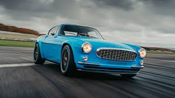
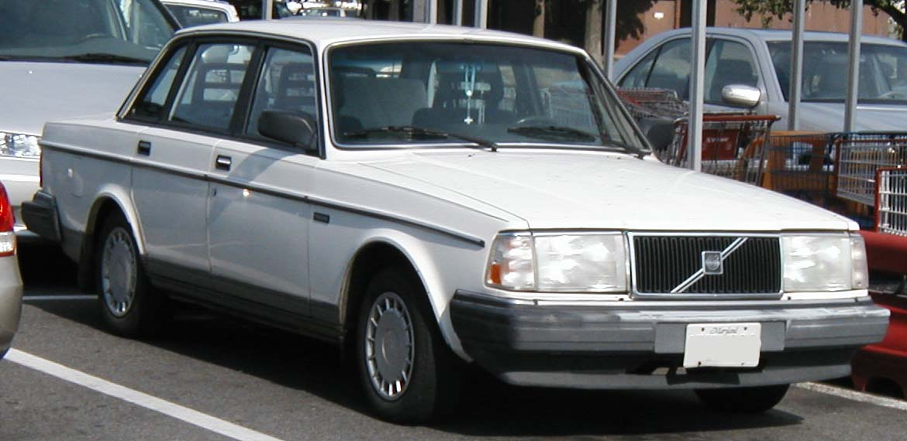
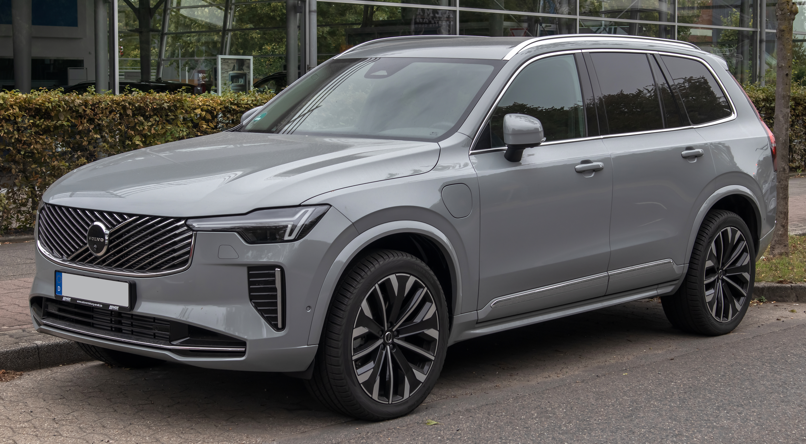
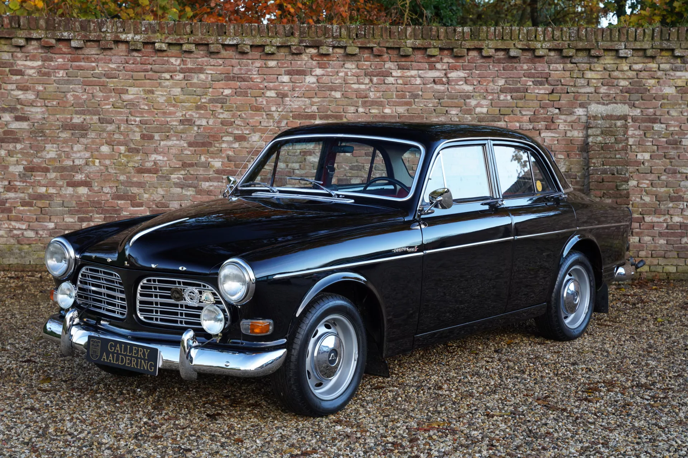
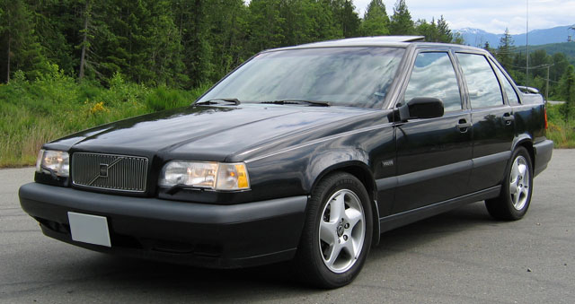
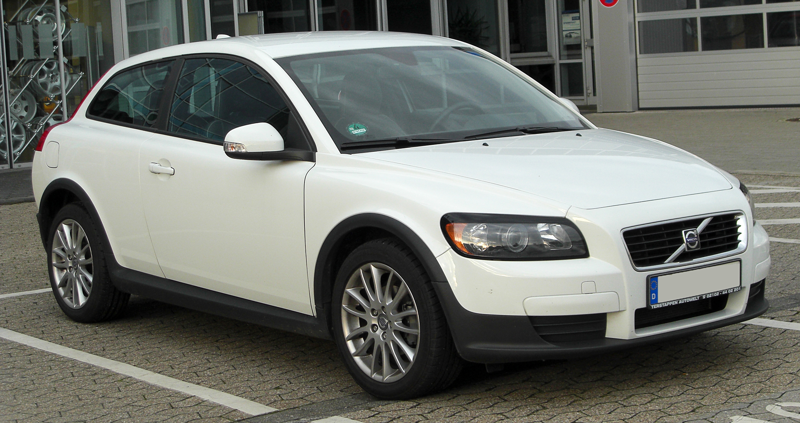
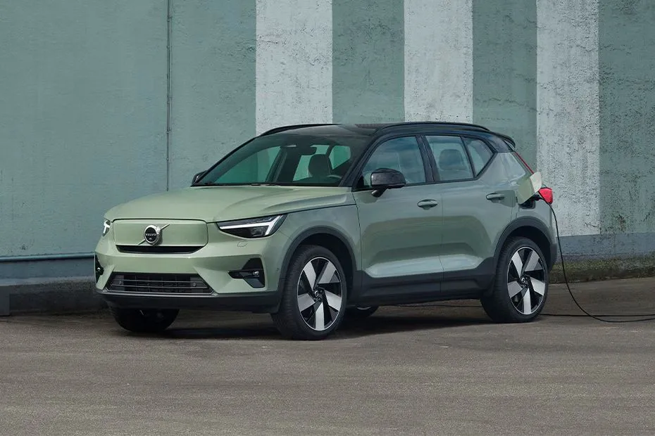
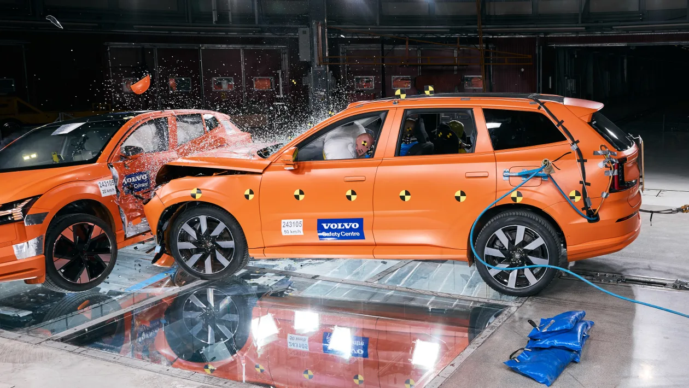
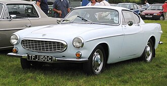

Volvo
For Life
Founded: 1927
Country: Sweden
Icon: P1800, 240
Safety Pioneer
For Life
Volvo was founded in 1927 by Assar Gabrielsson and Gustaf Larson. The name "Volvo" means "I roll" in Latin – fitting for a car company. From the beginning, the founders prioritized safety and quality.
The first Volvo, the ÖV4, rolled off the line on April 14, 1927 – celebrated as "Volvo Day." It was a open-top tourer with a 2.0L four-cylinder engine. Only 300 were built that first year.
Through the 1930s and 1940s, Volvo built a reputation for rugged, reliable cars. The PV444 (1944) was Volvo's first small car and a huge success, helping Sweden mobilize after WWII.
In 1959, Volvo engineer Nils Bohlin invented the three-point seatbelt – the most important safety device in automotive history. Volvo made the patent open, saving countless lives.
The 1960s brought the beautiful P1800 sports coupe, made famous by Roger Moore in "The Saint." The 140 series (1966) introduced Volvo's boxy but safe sedan style.
The 240 series (1974-1993) became Volvo's icon – boxy, indestructible, and incredibly safe. It cemented Volvo's reputation as the car for intellectuals and safety-conscious families.
In 1999, Volvo sold its car division to Ford, then in 2010 to Geely (China). Under Geely, Volvo has thrived – new platforms, stunning design, and a focus on electrification.
Today, Volvo produces the XC90, XC60, XC40 SUVs, and S60, V60 sedans/wagons. All are available as plug-in hybrids or fully electric. Volvo aims to be all-electric by 2030.
"Cars are driven by people. The guiding principle behind everything we make at Volvo is and must remain safety."- Assar Gabrielsson & Gustaf Larson, 1927

1961-1973
The beautiful Volvo sports coupe. Made famous by Roger Moore in "The Saint." One owner drove his 3.2 million miles – still running.

1974-1993
The boxy icon. Indestructible, safe, and beloved by intellectuals. Over 2.8 million built. The definitive Volvo.

2002-present
The luxury SUV that saved Volvo. First generation (2002) was a huge success. Second generation (2015) is stunning, safe, and available as hybrid.

1956-1970
Beautiful 1950s design. The Amazon established Volvo's reputation for quality and safety.

1944-1958
Volvo's first small car. Helped mobilize post-war Sweden. Over 440,000 sold.

1991-1996
Revolutionary front-wheel drive. 850 T-5R was a performance wagon. BTCC racing success.

2006-2013
Stylish hatchback with glass tailgate. Modern design and cult following.

2020-present
First Volvo EV. Compact SUV, 402 hp, 223 mile range. Future of Volvo.
Volvo's commitment to safety is unparalleled. They've invented countless life-saving technologies and shared them freely.
Volvo's goal: by 2020, no one should be killed or seriously injured in a new Volvo. They're getting close.

The P1800 is the most beautiful Volvo ever. Designed by Pietro Frua in Italy, it was a stunning sports coupe.
Irv Gordon bought a 1966 P1800 in 1966 and drove it over 3.2 million miles – a Guinness World Record. The original engine was never rebuilt.
The P1800 was driven by Roger Moore in "The Saint" (1960s TV series), cementing its cool factor.

Under Geely (2010), Volvo has been transformed. New platforms (SPA, CMA), stunning design, and electrification.
"Thor's Hammer" headlights, vertical taillights, minimalist Scandinavian interiors.